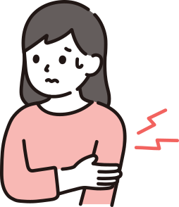
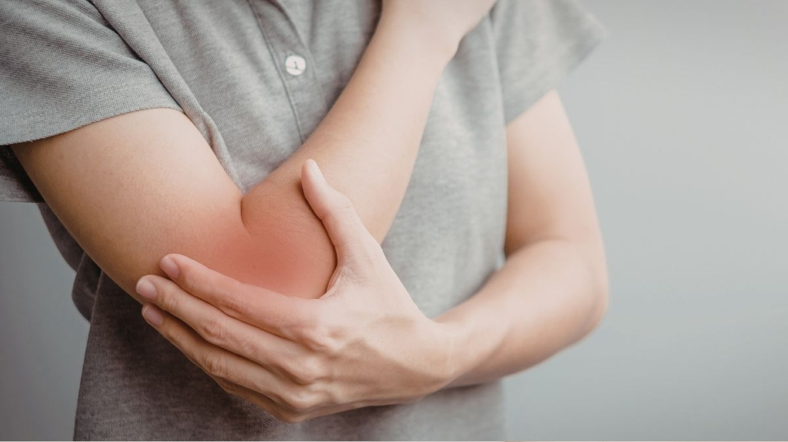

肘の痛みや使いづらさも整理しながら進めます
物を持つ、ひねる、家事や仕事で繰り返す動きなど、つらさが出る場面を確認しながら進めます。
「ドアノブを回すだけで激痛」「荷物を持つたびに肘の外側が痛い」——
その肘の痛み、肘だけの問題ではないかもしれません。
肘の外側（または内側）を押すと強い痛みがある
ドアノブ・雑巾しぼり・ペットボトルの開閉で肘に痛みが走る
物をつかんで持ち上げるときに肘〜前腕が痛む
安静にすると痛みは引くが、使い始めるとすぐ再発する
湿布・サポーター・アイシングでは根本的に改善しない
テニス・ゴルフだけでなく、デスクワークや家事でも悪化する

物を持つ、ひねる、家事や仕事で繰り返す動きなど、つらさが出る場面を確認しながら進めます。

痛みの場所だけでなく手首や肩の使い方も含めて確認し、生活に合わせた進め方をご提案します。

仕事や家事への影響も含めて相談しやすいよう、予約制で落ち着いた時間を確保しています。
テニス肘・ゴルフ肘の多くは、肘の腱への「繰り返しの過負荷」が原因ですが、その過負荷を生み出しているのは肘だけではありません。
肩甲骨の安定筋（サボり筋）が機能しないと、前腕のガンバリ筋が代償的に働きすぎ、肘の腱に慢性的な負担がかかります。また手首の硬さや胸郭の可動性不足も、肘への負荷を増幅させる要因です。
肘だけを治療しても、この「上肢全体の連動の乱れ」が残る限り、痛みは繰り返されます。
上肢全体の負担を減らし、安定させ、正しい使い方を身につける3段階で根本改善を目指します

手首・肘・肩・胸郭の可動域を評価。前腕の過緊張（ガンバリ筋）をほぐし、肘への負担を減らす準備を整えます。
肩甲骨まわりのインナーマッスル（サボり筋）を再教育。上肢全体が正しく連動できる安定性を取り戻します。
仕事・家事・スポーツ動作を見直し、肘への過負荷を生まない腕の使い方を身につけます。
肘の腱の痛みは、「使いすぎ＝休めば治る」と思われがちですが、実際には休んだだけでは再発するケースがほとんどです。
大切なのは、なぜその肘に負担が集中しているのかを評価すること。前腕・手首・肩甲骨・胸郭の動きの問題を丁寧に解きほぐすことで、根本からの回復が可能です。
14年の臨床経験で、あなたの肘の痛みの本当の原因を一緒に探しましょう。
症状の改善と再発予防に向けて、以下のペースを目安に進めていきます。
症状の程度にもよりますが、多くの方は週1〜2回の施術を1〜2ヶ月継続することで、物をつかむ・手首を動かす際の痛みが軽減し始めます。その後は2週に1回→月1回とペースを落とし、再発予防の段階へ移行します。
テニス肘・ゴルフ肘はスポーツ選手だけの症状ではありません。デスクワークやスマホ操作、家事での手首の反復動作でも同じ腱への過剰な負担が蓄積します。肘の痛みは前腕・手首・肩甲骨の動きの問題が根本にある場合がほとんどです。
一時的に痛みは引きますが、腱への過負荷を生む動きのクセや肩甲骨・前腕の機能不全を改善しない限り再発します。MSMメソッドでは肘だけでなく肩・胸郭・手首を含めた上肢全体の連動を整えることで、根本からの回復を目指します。
RELATED SYMPTOMS
肘の不調は、肩や首回り、腕全体のバランスの崩れと深く関係しています。
気になる症状があれば、あわせてご相談ください。
「自分の症状は良くなるのだろうか」「どんな施術をされるのか不安」——
そう思っている方こそ、まずはお気軽にご相談ください。
初回のカウンセリングで、あなたの状態を丁寧に確認したうえで、施術方針をご提案します。
柏市をはじめ、松戸市・我孫子市・取手市・野田市・流山市・守谷市など近隣エリアからもご来院いただいています。